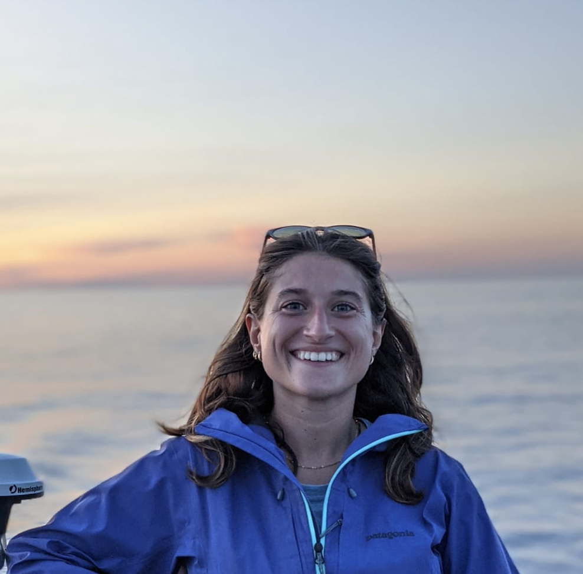

End-to-End Artificial Learning of Protection Gradient from Raw eDNA Sequences
Deep learning framework for predicting ecological protection gradients from raw eDNA sequences.
Researcher in machine learning for biodiversity monitoring and predictive ecology
I develop statistical, machine learning and deep learning methods to study ecological communities from complex biodiversity data, with a particular focus on environmental DNA metabarcoding, marine ecosystems and ecological forecasting.
My work connects applied statistics, neural networks, spatial ecological modelling and genomic ecology to build scalable tools for biodiversity assessment, conservation and ecosystem management.

Replace img/foto_leti with your photo.
End-to-end neural approaches for learning ecological signals directly from environmental DNA sequences.
Statistical and computational frameworks integrating genomic, ecological, environmental and functional data.
Computational tools for detecting biodiversity variation, ecosystem dynamics and socio-environmental gradients.
Deep learning framework for predicting ecological protection gradients from raw eDNA sequences.
Spatial factorization approach to represent fish eDNA assemblages as mixtures of unobserved ecological sources.
Deep learning methods for visualizing ecosystem properties from environmental DNA metabarcoding data.